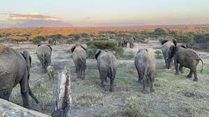

The Elephant
The elephant is one of the most remarkable and beloved animals on Earth. Known for their immense size, intelligence, and long trunks, elephants are majestic creatures that hold great cultural significance in many societies.

Elephants belong to the family Elephantidae and are divided into three species: the African bush elephant (Loxodonta africana), the African forest elephant (Loxodonta cyclotis), and the Asian elephant (Elephas maximus).
Elephants are herbivores, and their diet primarily consists of various plants, fruits, and bark. They have unique long trunks that serve multiple purposes, including grasping objects, gathering food, drinking water, and displaying various social behaviors.
Elephants are highly social animals and form complex family structures. They live in tight-knit groups led by the oldest and most experienced female, known as the matriarch. Male elephants often live separately or temporarily join herds during the mating season.
Unfortunately, elephants face significant threats in the wild, including habitat loss, poaching for ivory, and human-elephant conflicts. Conservation efforts are essential to protect these magnificent animals and ensure their survival in the wild for future generations.
At JB Zoo, we are dedicated to raising awareness about elephant conservation and providing a safe and enriching environment for our resident elephants. Visitors can witness these gentle giants up close and learn about the importance of protecting their natural habitats.